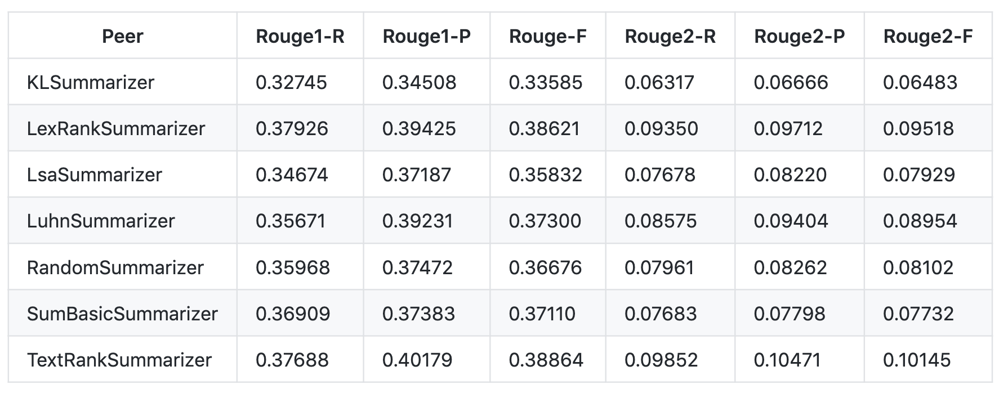

RESEARCH
- Home
- Research
Project Research
General Chatbot
Chatbot applications haven been widely utilized in various
areas, serving for either business, commercial, political or
entertaining purposes.There are numerous successful
predecessors developed by well-known companies, from Google
Now, Apple’s Siri to Microsoft’s Cortana, where we can learn
plenty of design ideas and technical solutions.
Having had a research on some existing ChatBots, we evaluate
a good chatbot by the following features:
- Precise perception of users’ needs
- Prompt and correct feedbacks to users' needs
- Friendly UI and dialogue design
There are two main categories of ChatBots, one is rule-based
chatbot, also known as decision-tree bot, the other is
AI-based chatbot[1], we chose to make AvaBot rule-based
regarding its task-oriented property and the time limitation
of our development. However, we also referred to the idea of
AI-based chatbots so that AvaBot is able to understand
intents and entities of a question serving for its
question-answering feature.
Document Processing Bot
AvaBot’s functionalities lay largely on document processing, we accordingly conducted a research over existing document processing bots on the market. Currently, only a small number of bots are supporting this feature, where the maturest one is IQ Bot[2] by RPA which aims to automatically classify, extract and validate information from business documents and emails.
IQ Bot is powered by computer vision, natural language processing and machine learning according to its website, which are mature and sophisticated AI technologies that we could adopt from, however, the bot’s usability is constrained by its strict prerequisites and use cost, specifically, users have to pre-download plug-ins to run the bot and will be asked to create learning instances themselves, which is highly unfriendly to the non-professionals and those with little ML knowledge. Those were the weak points where AvaBot could surpass it.
Technology Research
Framework
We started the development of AvaBot by researching
through some of the best bot development frameworks
including
MS Bot Framework
by Microsoft,
IBM Watson Conversation
by IBM and
Amazon Lex
by Amazon[3]. After deliberate considerations of their pros
and cons, we decided to choose MS Bot Framework as our
main development tool.
MS Bot Framework has its unique advantages in the
following aspects:
-
Easy to host:
it is supported by Azure Bot Service, which provides serverless compute resources to host bots. -
Powerful APIs:
alongside the framework itself, Microsoft has an impressive 22 machine learning APIs that can be utilized for natural language processing and useful tools, in particular, the QnA maker tool which would allow us to easily establish a question-answer pair database (knowledge base). -
Multi-channels:
the Microsoft Bot Framework connects to various social conversation channels such as MS Teams, Twitter, and Skype and can run on website and custom apps. -
Developer-friendly:
it has SDKs of multiple programming languages, where C#and Node.js are the most mature ones. The SDKs are well-documented and there are a variety of samples provided. -
Cost-effective:
Avanade provided with us budget for using azure resources. There is also azure student credits.
Compared to IBM Bot Framework, which is cost-consuming
and lack of guidance to novice developers, and Amazon
Lex, which has the limitations in terms of few channels
and high dependency and demand for preparation of
dataset, MS Bot Framework became our ultimate solution
out of its superior usability, sustainability and
extensibility.
API
To guarantee the accuracy of image recognition, we
utilized the Azure
Form Recognizer
API, which helps in extraction of text, key/value pairs,
and tables from types of documents.
There are 3
companies (Microsoft - Azure, Google - GCP, Amazon -
AWS) that provide such service, where Azure Form
Recognizer is of the best accuracy, since it has the
possibility to find the bounding box (cells’ or words’
coordinates) using
OCR[4]
and analyses the fastest (3s per 5), compared to GCP
(1h14min per 10) and AWS (52min per 5)[5].
Next→Languages
Node.js
 We use node.js for the development of main bot
structure. The reason is that node.js not only inherits
all the advantages that Javascript has, i,e, better
efficiency, good code performance and rich free tools,
but is also awesome at Non-blocking Input/Output and
asynchronous request handling, which is extremely useful
when developing real-time, multi-user applications as
ChatBots[6]. This also makes node.js natively suited to
making calls to external APIs with the help of libraries
like Axios, which would allow us to integrate functions
written in other languages easily to AvaBot.
We use node.js for the development of main bot
structure. The reason is that node.js not only inherits
all the advantages that Javascript has, i,e, better
efficiency, good code performance and rich free tools,
but is also awesome at Non-blocking Input/Output and
asynchronous request handling, which is extremely useful
when developing real-time, multi-user applications as
ChatBots[6]. This also makes node.js natively suited to
making calls to external APIs with the help of libraries
like Axios, which would allow us to integrate functions
written in other languages easily to AvaBot.
Python
 When it comes to natural language processing as required
feature for AvaBot, there is no better choice than
python. we chose to use python for the explore of
solutions for document processing as it is flexible,
usable, and of tons of powerful third-party libraries
that can be utilized for NLP, for example, Natural
language toolkit (NLTK) is the most popular library for
natural language processing (NLP) which was written in
Python and has a big community behind it[7], which comes
with many corpora, toy grammars, trained models, etc.
The document processing features inhabited by AvaBot are
mostly achieved by functions written in python and
integrated to it by RESTful APIs.
When it comes to natural language processing as required
feature for AvaBot, there is no better choice than
python. we chose to use python for the explore of
solutions for document processing as it is flexible,
usable, and of tons of powerful third-party libraries
that can be utilized for NLP, for example, Natural
language toolkit (NLTK) is the most popular library for
natural language processing (NLP) which was written in
Python and has a big community behind it[7], which comes
with many corpora, toy grammars, trained models, etc.
The document processing features inhabited by AvaBot are
mostly achieved by functions written in python and
integrated to it by RESTful APIs.
Next→Algorithm
Text-Summary Methodology
AvaBot is able to give what a document is about by summarizing it, it is therefore critical that we choose the right text-summarization method to yield reliable results.
In general, we applied extractive summarization instead of risking for abstractive summarization[8] for the reason that current abstractive summarizing algorithm are less stable and of high demand of training, time and computational power, where Google’s open-source abstractive text summarization architecture, Textsum, requires training for over million time-steps to successfully reproduce the reported result[9], compared to which extractive summarization is more reliable, efficient and of the advantages it respects and reflects more honestly the original documents.
Out of the well-established extractive text
summarization algorithms, we turned to
TextRank
Algorithm, which produced better outcomes compared to
other methods[10] when tested on MultiLing2015 training corpus[11].

Next→QA system
Introduction
QA system, i.e., question answering system, is the
system to retrieve information from a document and then
process natural language queries, and thus our solution to AvaBot's document query feature. QA system can be
classified by domain. One is close domain QAs, which are super effective in their specific domains, but require
expert-constructed knowledge bases and
strict limit of the type of questions. The other is Open Domain QA
system, it has come out with the fast development of
comprehensive theories in computational linguistics,
and is the main target area we are focusing on.
Existing Open-source QA system
Haystack is an open-source framework for building
end-to-end question answering system. We chose to use
it for implementing the QA feature regarding its
scalable functionalities, such as extracting text from pdf,
docx and txt, indexing a file with different searching
engines like Elasticsearch or FAISS, flexible modules to
adapted in order to target on specific file content.
Haystack encapsulates the Transformer project and makes
it work well in industrial use cases. The whole
project is open-sourced, allowing for fine tune to suit
what we need. The NLP models we used were trained with
Stanford Question Answering Data Set(SQuAD)[12], which is
flexible in processing texts in different knowledge
backgrounds.
Elasticsearch
A "database" is reuqired for the QA system to store files
with meta data and provide them to the retriever at
query time. Available solutions include Elasticsearch,
FAISS and Milvus. We eventually went for Elasticsearch in that ES
is particularly good at dense retrieval with the fastest and
most accurate sparse retrieval with many tuning options among the three. In
addition, ES is a mature project, it has been
production-ready and had a big community behind it.
Gunicorn
We decided to separately deploy our QA system on a virtual machine because it depended on some system tools such as docker engine. A virtual machine can provide a more flexible environment configuration compared with Azure Function, with which we built APIs for the other bot features; Also, VM has large memory and multi-core CPU, which could speed up document processing. Among several application servers we could choose to host the QA system, Gunicorn[13] became our final choice as it is much easier to set up with a flask application (btw, we are in favour of unicorn ). The reason is that Gunicorn is using a pre-fork model[14], which keeps blocking the thread when it is waiting for IO. This does not really affect our project as it requires low level of concurrency. We also solved this problem by proxying it with Nginx[15].
Technical Decisions
Having researched through different technologies and methodologies, balancing between their benefits and drawbacks, we drew our final conclusions on how AvaBot was to be made up.
| Tech | Decision |
|---|---|
| Bot Framework | Microsoft Bot Framework |
| Language | Node.js & Python |
| External API | Azure Form Recognizer |
| External Tool | Azure QnA Maker |
| Doc-Summary | TextRank Algorithm |
| Doc-Query | open domain QA system |
| Image-Recognition | OCR |
References:
[1] The Best AI Chatbot: AI-powered vs. Rule-Based Chatbots Available at: https://tryswivl.com/blog/ai-powered-chatbot/which-is-the-best-option-ai-powered-or-a-rule-based-chatbot/ [Accessed 6th March 2021]
[2] IQ Bot with Native Artificial Intelligence | Automation Anywhere Available at: https://www.automationanywhere.com/products/iq-bot [Accessed 6th March 2021]
[3] 25 Chatbot Platforms: A Comparative Table | by Data Monsters | Chatbots Journal Available at: https://chatbotsjournal.com/25-chatbot-platforms-a-comparative-table-aeefc932eaff [Accessed 6th March 2021]
[4] How Does OCR Work? eFileCabinet, Rivera, A. (2019) Available at: https://www.efilecabinet.com/how-does-ocr-work/#:~:text=OCR%20is%20a%20tool%20to,or%20other%20symbols%20it%20is [Accessed 5th March 2021]
[5] Azure vs AWS vs GCP (Part 2: Form Recognizers), Catzon Available at: https://cazton.com/blogs/executive/form-recognition-azure-aws-gcp [Accessed 5th March 2021]
[6] Pros and Cons of Node.js Web App Development | AltexSoft Available at: https://www.altexsoft.com/blog/engineering/the-good-and-the-bad-of-node-js-web-app-development/ [Accessed 6th March 2021]
[7] NLTK: The Natural Language Toolkit Available at: https://arxiv.org/abs/cs/0205028 [Accessed 10th March 2021]
[8] Text Summarization in Python: Extractive vs. Abstractive techniques revisited | RARE Technologies Available at: https://rare-technologies.com/text-summarization-in-python-extractive-vs-abstractive-techniques-revisited/ [Accessed 6th March 2021]
[9] TextRank: Bringing Order into Texts, Rada Mihalcea and Paul Tarau Available at: https://web.eecs.umich.edu/~mihalcea/papers/mihalcea.emnlp04.pdf [Accessed 6th March 2021]
[10] Some questions about the textrank · Issue #87 · miso-belica/sumy Available at: https://github.com/miso-belica/sumy/issues/87 [Accessed 6th March 2021]
[11] MultiLing Community Site: Task: MMS - Multi-document Summarization - Data and information Available at: http://multiling.iit.demokritos.gr/pages/view/1540/task-mms-multi-document-summarization-data-and-information [Accessed 6th March 2021]
[12] The Stanford Question Answering Dataset Available at: https://rajpurkar.github.io/SQuAD-explorer/ [Accessed 10th March 2021]
[13] Transformers: State-of-the-Art Natural Language Processing, Hugging Face, Brooklyn, USA Available at: https://www.aclweb.org/anthology/2020.emnlp-demos.6.pdf [Accessed 10th March 2021]
[14] CRITICAL WORKER TIMEOUT when running Flask app · Issue #1801 · benoitc/gunicorn Available at: https://github.com/benoitc/gunicorn/issues/1801 [Accessed 10th March 2021]
[15] django - Why do I need Nginx and something like Gunicorn? - Server Fault Available at: https://serverfault.com/questions/331256/why-do-i-need-nginx-and-something-like-gunicorn [Accessed 10th March 2021]